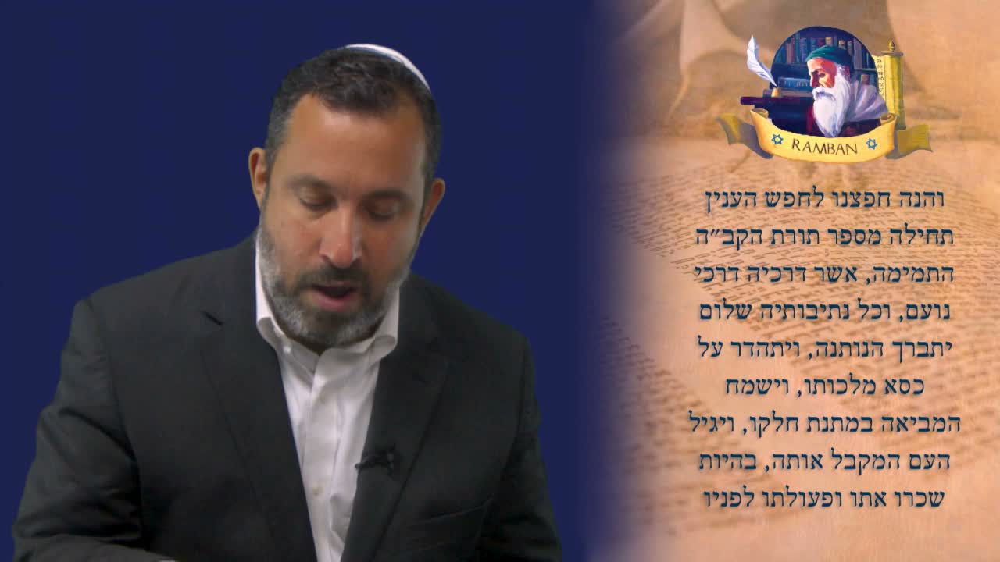

救贖之書 · 第四課：證據 The Book of Redemption · Lesson 4: The Evidence
拉姆班（Ramban）在《救贖之書》(Sefer HaGeulah) 中像一位律師那樣，為「救贖」這個主題擺出證據。他說：我只有一項證據，就是妥拉本身。妥拉不是咒詛之書，而是一份禮物——一條把以色列從流亡帶回救贖的道路。 In his Sefer HaGeulah, the Ramban argues like a lawyer setting the evidence for the case of redemption. He says: I have only one piece of evidence — the Torah itself. Not a book of curses, but a gift; the very road that carries Israel out of exile and into redemption.
「我要在你面前擺出這件 inyan（事項）。」拉姆班（רַמְבַּ"ן Ramban）這樣開始《救贖之書》的這一段。沙皮拉拉比解釋：inyan 這個字，在這裡的意思就是「證據」(עֵדוּת edut)。拉姆班像一位律師，要為「救贖」(גְּאוּלָה geulah) 這場「案件」呈上證據——而且他特意用單數：「我只有一項證據。」這一項證據是什麼？就是妥拉本身。本課要回答的，正是這個關鍵問題：當我們談論以色列如何從流亡 (גָּלוּת galut) 走向救贖時，我們手中唯一、卻足夠的證據，是什麼。 “I want to bring before you this inyan — this matter.” So begins this passage of the Ramban's Sefer HaGeulah. Rabbi Shapira explains: here the word inyan means “evidence” (עֵדוּת edut). The Ramban argues like a lawyer, laying out the proof for the “case” of redemption (גְּאוּלָה geulah) — and he deliberately uses the singular: “I have only one piece of evidence.” What is it? The Torah itself. This lesson answers that one decisive question: when we speak of how Israel moves from exile (גָּלוּת galut) into redemption, what is the single — yet sufficient — piece of evidence in our hands?
一、回顧 ── 我們的使命是宣告救贖I. Recap — Our Task Is to Proclaim the Redemption
沙皮拉拉比先把我們帶回這趟旅程的起點。在前幾課裡，拉姆班已經清楚地說明：在末後的日子，我們的工作就是宣告救贖——把以色列從流亡 (galut) 帶進救贖 (geulah)。而我們做這事的方法，就是「宣告它、教導它」，正如以賽亞書五十章四節所說的：神賜下「受教者的舌頭」，叫我們知道怎樣用言語扶助疲乏的人。 Rabbi Shapira first takes us back to where this journey began. In the earlier lessons the Ramban had already made it plain: in the last days, our work is to proclaim the redemption — to bring Israel from galut (exile) into geulah (redemption). And the way we do this is by proclaiming it and teaching it, as it says in Isaiah 50:4 — God gives “the tongue of the learned,” that we might know how to sustain the weary with a word.
本課我們進到第一卷 (book 1)、第一道門 (Sha'ar 1)、第一章第二節。拉姆班在這裡開始有系統地向我們解釋《救贖之書》(Sefer HaGeulah) 背後真正的目的。沙皮拉拉比提醒我們留意他用字的精準——因為這位拉比的每一個字，都是經過稱量的。 In this lesson we arrive at Book 1, Sha'ar 1 (the First Gate), chapter 1, verse 2. Here the Ramban begins systematically to explain the real purpose behind Sefer HaGeulah, the Book of Redemption. Rabbi Shapira asks us to watch the precision of his words — for with this sage, every single word is weighed.
二、Inyan ── 「我只有一項證據」II. Inyan — “I Have Only One Piece of Evidence”
拉姆班說：「看哪，我要把這件 inyan 帶到你面前。」沙皮拉拉比指出，inyan（עִנְיָן）這個字在這裡承載的意思，就是「證據」。拉姆班在此扮演的，是一位律師的角色：他要為「救贖」這個議題，把證據一一陳明。 The Ramban says: “Behold, I want to bring this inyan before you.” Rabbi Shapira points out that the word inyan (עִנְיָן) here carries the sense of “evidence.” In this passage the Ramban takes on the role of a lawyer: he is setting out, point by point, the evidence for the matter of the geulah.
這裡有一個容易被略過、卻極其重要的文法細節。拉姆班沒有用複數的「眾證據」(ra'ayot)，而是用了單數的「證據」(רְאָיָה ra'aya)。沙皮拉拉比強調：拉姆班是在說——「我只有一項證據。」不是許多項，是一項。在一個人們習慣堆砌無數論證的世界裡，這位拉比卻說：我手上只需要一件物證，就夠了。 There is a small grammatical detail here, easy to miss yet decisive. The Ramban does not use the plural “evidences” (ra'ayot); he uses the singular “evidence” (רְאָיָה ra'aya). Rabbi Shapira stresses the point: the Ramban is saying — “I have only one piece of evidence.” Not many; one. In a world that loves to pile up endless arguments, this sage says: I need only a single exhibit, and it is enough.
「我要尋求這件事，要把一項證據帶到你面前。」——拉姆班，《救贖之書》第一門 “I want to seek this matter, and to bring you one piece of evidence.”— Ramban, Sefer HaGeulah, First Gate
三、那一項證據 ── 妥拉本身III. The One Piece of Evidence — The Torah Itself
那麼，那唯一的一項證據是什麼？拉姆班的回答乾脆而震撼：那證據，就是妥拉本身。當我們思想救贖、思想那將來的 geulah 時，我們必須注視的證物，就是妥拉。 So what is that one piece of evidence? The Ramban's answer is blunt and arresting: the evidence is the Torah itself. When we think about redemption — about the future geulah — the exhibit we must look at is the Torah.
沙皮拉拉比知道有人會反對：「妥拉不是一本『預言書』(נְבוּאָה nevuah) 啊。」拉姆班會完全不同意。他堅持：當我們要談論那將來的救贖時，妥拉是我們唯一可用的工具。換句話說，妥拉裡藏著一個救贖的故事——而拉姆班要更進一步：妥拉不只是「講」救贖，妥拉本身就是把我們帶出流亡、帶進救贖的那件器具。 Rabbi Shapira anticipates the objection: “But the Torah is not a book of prophecy (נְבוּאָה nevuah).” The Ramban would completely disagree. He insists that when we seek to speak of the future redemption, the Torah is the only tool we have. In other words, the Torah holds within it a story of redemption — and the Ramban goes further still: the Torah does not merely describe the geulah; it is the very instrument that carries us out of exile and into redemption.
為了支持這一點，拉姆班引用了箴言三章十七至十八節。他說：我之所以選擇妥拉，是因為——「她的道是安樂，她的路全是平安。」沙皮拉拉比提醒我們：這正是我們每週在會堂裡，當收起妥拉卷軸時所唱的《生命樹》(Etz Chaim) 禱文裡的經句。 To support this, the Ramban quotes Proverbs 3:17–18. He says: the reason I choose the Torah is that — “her ways are ways of pleasantness, and all her paths are paths of peace (shalom).” Rabbi Shapira reminds us that these are the very verses we sing in the Etz Chaim (“Tree of Life”) prayer, recited each week in the synagogue as we close the Torah service.
四、Tamim ── 完全、純全的妥拉IV. Tamim — The Torah That Is Perfect and Whole
接著拉姆班用了一個關鍵的字：他說救贖要透過「Torat Adonai HaTamimah」——「耶和華純全的律法」。這個字 tamim（תָּמִים）是什麼意思？沙皮拉拉比帶我們追溯它在聖經中第一次出現的地方：它是用來形容挪亞的。經上說，挪亞是「義人，是tamim」——「完全人」、「無可指摘的人」。 Next the Ramban uses a key word: he says redemption comes through “Torat Adonai HaTamimah” — “the perfect Torah of the LORD.” What does tamim (תָּמִים) mean? Rabbi Shapira traces it to its first appearance in Scripture: it is used to describe Noach (Noah). The text calls Noah a “righteous man, tamim” — blameless, whole, without defect.
拉姆班在此說的，其實非常深刻。沙皮拉拉比把它與使徒保羅 (Rav Shaul) 的話相連——保羅同樣說：律法是「聖潔、公義、良善的」（羅馬書 7:12）。拉姆班的論點是：問題不在妥拉。我們今天之所以仍在流亡 (galut) 之中，不是因為妥拉的緣故。 What the Ramban says here is in fact profound. Rabbi Shapira ties it to the words of the Apostle Paul (Rav Shaul), who likewise wrote that the Torah is “holy, righteous, and good” (Romans 7:12). The Ramban's argument is this: the problem is not with the Torah. The reason we remain in galut today is not because of the Torah.
拉姆班幾乎像是妥拉的辯護人。他說：流亡的根源不在妥拉；恰恰相反，妥拉是純全的。是的，妥拉裡確有審判、有災禍、有看似嚴厲的話；但他堅持：妥拉終究是「安樂之道」，她一切的路都引你歸向平安 (shalom)。 The Ramban almost stands as the Torah's defence attorney. He says: the root of exile is not the Torah; on the contrary, the Torah is perfect. Yes, there are judgments in the Torah, calamities, words that sound severe — but he insists that ultimately the Torah is a way of pleasantness, and all her paths lead you to shalom.
五、妥拉的目的 ── 與神和好，不是分離V. The Purpose of Torah — Union with God, Not Separation
沙皮拉拉比在此停下來，把這課最核心的應用講透：妥拉的目的，是把我們帶進與神的平安 (shalom) 之中。每一個人都需要明白——妥拉是要叫我們與耶和華和好，不是叫我們與祂分離。 Here Rabbi Shapira pauses to drive home the lesson's central application: the purpose of the Torah is to bring us into shalom with God. Everyone must understand this — the Torah is given to bring us into peace with the LORD, not to separate us from Him.
有人以為，妥拉之所以被賜下，是要叫我們與神隔開。萬不可如此。拉姆班引用那句話——「她一切的路都是平安」(kol netivoteha shalom)——指出妥拉被賜下，是要叫我們與神聯合、與神完全合一。沙皮拉拉比甚至用了婚姻的意象：妥拉是要叫我們與神成婚，進入一種完美的合一。 Some imagine the Torah was given so that we would be set apart from God. God forbid. The Ramban quotes the phrase — “all her paths are peace” (kol netivoteha shalom) — to show that the Torah was given so that we might be joined to God, in perfect unity with Him. Rabbi Shapira even reaches for the imagery of marriage: the Torah is given that we might be wedded to God, brought into a perfect oneness.
六、Matanah ── 妥拉是一份禮物VI. Matanah — The Torah Is a Gift
接著拉姆班換了一個檔位——他開始讚美神。沙皮拉拉比說，這正是他最愛拉姆班的地方：在每一步，他都在讚美神。拉姆班用《卡迪什》(Kaddish) 禱文裡的詞句來尊崇神：「願賜下妥拉的那一位得稱頌；願祂在祂國度的寶座上被高舉。」他稱神為一位榮美的君王。 Then the Ramban shifts gears — he begins to praise God. Rabbi Shapira says this is exactly what he loves about the Ramban: at every step, he is praising God. Using language drawn from the Kaddish prayer, the Ramban exalts Him: “Blessed be the One who has given us the Torah; may He be exalted upon the throne of His kingdom.” He calls God a splendid King.
然後拉姆班轉向那位「mavi」——「帶來者」——就是把妥拉帶給以色列的摩西 (Moshe)。他說：願我們因妥拉所賜下的這份禮物而歡欣。請留意他用的字：matanah（מַתָּנָה，禮物）。 Then the Ramban turns to the one who is the “mavi” — the “bringer” — Moshe (Moses), who brought the Torah to Israel. He says: may we rejoice in the gift the Torah has given us. Note the word he chooses: matanah (מַתָּנָה, a gift).
沙皮拉拉比指出，這是拉姆班極其獨特、也極其美好的一點：他不把妥拉看作一套律法、一本咒詛之書，或一付重擔。他稱妥拉為一份「禮物」。這是我們都可以學習的：妥拉是賜給以色列的禮物。拉姆班接著說：「那領受妥拉的子民有福了，是歡喜快樂的」——他甚至不只說「蒙福」，而是說「歡欣」。 Rabbi Shapira notes that this is something deeply unique — and beautiful — about the Ramban: he does not view the Torah as a body of law, a book of curses, or a burden. He calls the Torah a “gift.” This is something we can all learn: the Torah is a gift to Israel. The Ramban continues: “Joyful are the people who receive it” — he does not merely say “blessed,” but “full of joy.”
「願那領受妥拉的子民歡欣，因為他的賞賜與他同在，他所做的工就在他面前。」——拉姆班，《救贖之書》 “Let the people who receive it rejoice, for their reward is with them, and their work is before them.”— Ramban, Sefer HaGeulah
七、Kabbalah ── 「領受」妥拉，而非只是「遵行」VII. Kabbalah — To “Receive” the Torah, Not Merely to “Do” It
沙皮拉拉比在這裡點出一個極其細膩、卻關鍵的分別。拉姆班沒有用「遵行」(doing)、「持守」(observing) 妥拉這樣的字眼，而是用了「領受」(receiving)——而希伯來文「領受」這個動詞，正是「Kabbalah」(קַבָּלָה) 這個詞的字根。「領受妥拉的人」，就是 m'kabel——接過這份禮物的人。 Here Rabbi Shapira draws out a subtle but crucial distinction. The Ramban does not use the words “doing” or “observing” the Torah; he uses the word “receiving” — and the Hebrew verb “to receive” is the very root from which we get the word “Kabbalah” (קַבָּלָה). The one who “receives the Torah” is the m'kabel — the one who takes hold of the gift.
為什麼這個區別如此重要？因為，沙皮拉拉比說，那真正領受妥拉的人，會被轉化、被模成神的形像。這正是拉姆班的要點：我們要透過救贖來解決流亡的問題；但他要我們知道——把以色列帶進救贖的最大器具，就是妥拉。 Why does this distinction matter so much? Because, Rabbi Shapira says, the one who truly receives the Torah is transformed into the image of God. This is precisely the Ramban's point: we will resolve the problem of exile through redemption — but he wants us to know that the greatest vehicle for bringing Israel into redemption is the Torah.
八、妥拉是器具，救贖才是目標VIII. The Torah Is the Vehicle; Redemption Is the Goal
沙皮拉拉比在收尾時，澄清了一個許多基督徒已經半懂的真理。許多基督徒明白：妥拉裡有一個救贖的故事。這當然沒錯。但拉姆班說的，是更進一步的事—— As he draws toward a close, Rabbi Shapira clarifies a truth that many Christians already half-grasp. Many Christians understand that there is a redemption story inside the Torah. That is true, as far as it goes. But the Ramban is saying something more —
妥拉是那器具，是那工具，要把我們從流亡 (galut) 帶出，進入救贖 (geulah)。這就是分別所在：妥拉作為一件工具。妥拉不是最終的目標——最終的目標是救贖。正如我們從前怎樣出了埃及、離了為奴之地、進入了拯救，照樣，妥拉要作我們的「框架」、我們的守護，引我們從流亡走進救贖。 The Torah is the vehicle, the tool, to bring us out of galut and into geulah. That is the difference: the Torah as an instrument. The Torah is not the final goal — the final goal is redemption. Just as we once came out of Egypt, out of the house of bondage, into deliverance, so the Torah is to be our “frame,” our guard, leading us out of exile and into redemption.
沙皮拉拉比預告：在下一課裡，我們會看見拉姆班如何更進一步地——就在這同一節（第二節）裡——為我們定義「這妥拉究竟是什麼」。但本課的結論已經立穩：若我們真正領受妥拉，它就把我們帶向救贖；它把我們帶向那些祝福、而非咒詛，帶向那地的應許——這正是我們所翹首盼望的。 Rabbi Shapira gives us a preview: in the next lesson we will see the Ramban go further still — within this very verse (verse 2) — to define for us “what this Torah actually is.” But the conclusion of this lesson already stands firm: if we truly receive the Torah, it brings us to redemption; it brings us to the blessings and not the curses, to the promises of the land — which is exactly what we are looking forward to.
九、結語 ── 一項證據，已經足夠IX. Closing — One Piece of Evidence Is Enough
「我只有一項證據 (edut)，那就是妥拉本身。她的道是安樂，她的路全是平安。妥拉不是要叫你與神分離，而是要把你帶進與神完全的合一。領受這份禮物 (matanah) 的子民有福了——因為妥拉是那器具，要領我們從流亡 (galut) 走進救贖 (geulah)。」 “I have only one piece of evidence (edut): the Torah itself. Her ways are ways of pleasantness, and all her paths are peace. The Torah is not given to separate you from God, but to bring you into perfect unity with Him. Joyful are the people who receive this gift (matanah) — for the Torah is the vehicle that carries us out of exile (galut) and into redemption (geulah).”